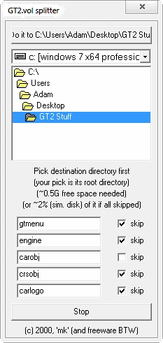
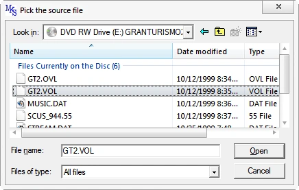
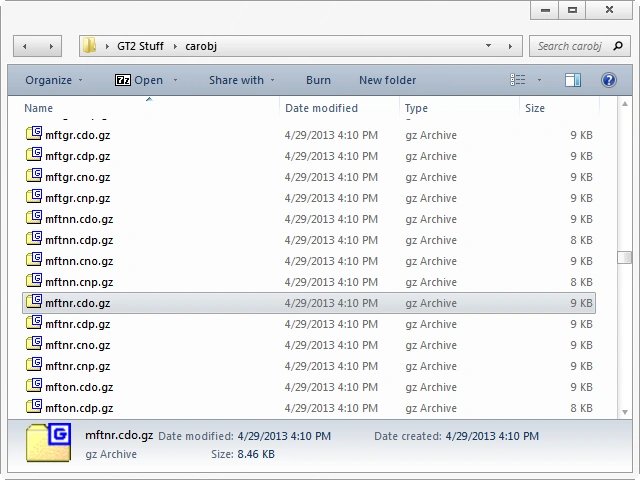
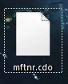
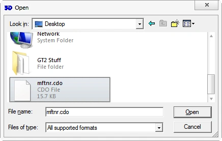
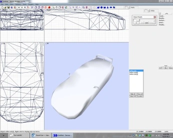
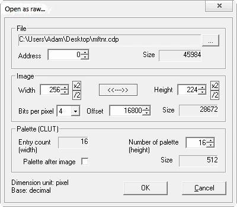
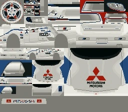
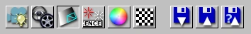
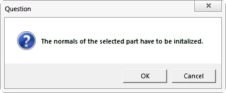

GT2 to RV Tutorialhorizontal swipe or arrows <- -> for IDsIn many ways, this tutorial is insanely out of date. Many new discoveries, tools and workflows have been made since its creation.I am keeping this here simply for posterity and reference to things that may still apply. (ID list should still be useful!) This isn't a tutorial on how to use ZModeler or Lithium Unwrapper. You'll need your own wheel mesh, and to map the car or wheels in such a way that it all fits on the map. You can use my wheels if you wish, scloink's, stock wheels et cetera. The opportunities are quite large. Chapters:
Programs you'll need:
Chapter 1: Retrieving mesh and the basicsWell, now that we've got that out of the way, pop either the Arcade or Simulation disc in your CD drive (real or virtual). Make a new folder, name it, and make sure it's where you'd like it. Start GT2Vol and choose the directory you just created (it's at the top of the software). Deselect carobj from the list of items to skip, as this contains all the game's car meshes.Click the Do it button when you are sure this is where you want to extract the files. It'll start doing its magic!  Find the GT2 CD in the file selector and go inside it. Choose the GT2.VOL file!  Now just wait for it to finish, and then go to the carobj folder inside of the folder you extracted to. This folder contains *.gz archives (the cars) with double extensions. The first extension is the type of data contained. Now, you're probably curious of why there's so many files for each ID#, right? Let me explain:The file extensions are more descriptive than you may think at first glance. The first letter is always C, car. The second letter is either D or N. This signifies the day or night variants of the car, chosen by the game to fit the track environment's time of day. This of course changes things like whether pop-up headlights are up, and if headlights and rear lights are on. The third letter is O or P- object and paint accordingly. So if you have a *.cnp file, it's the "night paint" of said car, or if you have a *.cdo file it's "day object" and so on. Naturally, if you convert the night object (3D mesh), you want to convert the night paint (texture) alongside it- if you wish to go the texture conversion route, that is! We're only worried about the mesh for now, though. The prefixed letters and numbers are the vehicle ID. You can find out what car is what by referencing the ID list. I'll be using a day mesh for this example. When you decide which car you wish to work on, open the *.cdo.gz version of the applicable ID. Extract the *.cdo out of the archive!  If you're lazy, click the image above! Import this file in ZModeler:  Be surprised- as you'll notice that these files include multiple models for level-of-detail purposes. You only need the highest detail mesh, so discard the rest (cdo[0] and cdo[1]). Let's start thinking about textures in the next chapter!  Chapter 2: Procuring a texture mapThere's multiple ways you can go about this.The three methods I've used:
The first and second methods for making a texture map are a free-for-all. Because of this, I won't elaborate on it much. The third and final method is something that actually takes some previous knowledge to do, so I will expand upon that. You'll need to extract the texture for the mesh you're converting. Since our example is mftnr.cdo(.gz), we'll need to extract mftnr.cdp from *.cdp.gz. Open the archive, and extract mftnr.cdp from it. Place it anywhere you wish, but remember where you put it. We'll be opening it with PSicture next. Car textures in GT2 can only be read in raw mode- unlike the *.tim files that are very easy to work with! Sadly, those *.tim(s) are only used for wheels procured in the game from the Wheel Shop. Opening GT2 car textures in raw mode takes very specific values to achieve an adequate result. Open PSicture. CTRL+R or "File -> Open as raw...". Select your *.cdp file. And fill out the boxes exactly as they are here:  You will likely notice some wrong colors after import. This is a small annoyance- different sections of the bitmap will be rendered correctly under different palettes. To cycle through the palette, press F8. If you find something correctly rendered under a certain palette, save the image as a bitmap (CTRL+S or "File -> Save image") for later use. Keep saving bitmaps! If you wish to cycle back, press F7. You'll end up saving at least a few different bitmaps because of this. Notice some of the areas are rendered correctly and others are not:  After you have all your different bitmaps together, it'll be up to you to build a map out of these different palette chunks. If certain aspects of the texture look like they'd be hard to UV map for your skill level, feel free to take screenshots of the problem areas for easier mapping or make your own textures. Try to keep it as seamless as possible. I won't continue further because I think you've got this. Chapter 3: ZModeler to Lithium Unwrapper and backSo you have that car imported still, yes? The LOD models deleted? Good. Now, here's what you need to do. This part is indeed a little iffy, so any attention here is useful. Delete all materials and add a new material- the bitmap you made in the previous chapter. When all is good, export this as a *.3ds. Why? Because we're leaving ZModeler. I personally never liked ZModeler for UV mapping.If you have a better understanding of ZModeler's UV system than LithUnwrap's and don't feel like changing workflow, skip to Chapter 5. If you do wish to use Lithium Unwrapper, I'm not explaining its use here, but I'll go through the basics! Open Lithium Unwrapper. Go to "File -> Model -> Open" in the menu, and open the *.3ds file you created. With the associated material, it should load fully. There are many possible ways to unwrap the mesh, and given the freedom of selection, it's very easy and nimble at its task. Once you have the car fully UV mapped, "File -> Model -> Save". Re-import this into ZModeler- however, there will be another hair-pulling step involved that you may not have seen coming! You see- when you converted the file to *.3ds, you totally messed up the vertex normals! The normals need recalculated. I personally use FCE Finish for this task. Chapter 4: FCE FinishSince we're moving to a different application, I need to take that mesh I just imported back into ZModeler and export is as an *.fce, the NFS4 format. Once the file is exported, open it in FCE Finish. Its link after install might be broken like it was for me. That's some quality workmanship. It isn't hard to find in Program Files, however. Another note: you'll get a little pop-up that there is no help.dat. Just skip through it!Select Surfaces after the file is open:  When you click it, you'll get a pop-up:  Hit OK. Now, let the adjusting begin. You can get real technical, but I'd recommend just clicking Smooth by angle limit. The farthest right option, No, is the most surefire one; if you want to retain some edges by angle amount, tweak to taste. When all looks good, simply save the *.fce. Chapter 5: Final Preparations for Re-Volt!This is where it'll start getting a lot like NFS4 conversions, it's the home stretch! I'll assume that whichever path was taken, you have all models and textures sorted. At this point, you'll want to do the standard car export procedure so that it actually works right in Re-Volt (isn't clear or black). Once you have it exported and shaded, we need to decide on a scale. I use a scale of 0.5x, but if you want it closer to NFS4 TMaM size, you'll want to scale it closer to 0.4x. You're almost there! Time to make some inspired parameters, unlike me!Extra tips:
|